Malaysia Airlines flight 370 disappeared on 8 March 2014 and has not been found. Over twelve years, seabed surveys by the Australian Transport Safety Bureau (ATSB) and Ocean Infinity have imaged more than 230,000 km² of the southern Indian Ocean along the seventh Inmarsat arc without locating the aircraft. What follows is not a static post-mortem with hardcoded checkboxes. It is the complete, progressive investigation run step by step inside ABYSSAL's general-purpose workbench — starting from literally zero location evidence (`30,701,049 km²`), admitting each dataset one piece at a time, testing every physical engine and fringe lead against raw public archives (even when they return inconclusive or null), and arriving at the final residual probability map.
Everything here uses real public data with cryptographic receipts (URL, timestamp, byte length, SHA-256 digest, licence). Every forward model is calibrated against independent physical truth — ground-station calibrations, the aircraft's own ACARS weather reports, catalogued Indian Ocean earthquakes, published ATSB sonar contacts — before it is allowed to score MH370. Nothing synthetic or simulated is admitted.
Not found. Two independent satellite channels — timing alone (Doppler discarded) and timing plus Doppler — both place the end of a steady autopilot flight between 37.4°S and 39.7°S on the 7th arc. Measuring the published ATSB Phase 2 sonar mosaic directly from pixels (~60 m resolution) shows 99.67% of the ±25 NM band across 36.0°S–39.45°S is imaged: coverage gaps can hide a 250 m debris field for only 0.013% of the prior. If the flight was steady, the wreck is in one of three places: just south of the searched limit (39.45°S–40.5°S, never searched — 36.0% of the steady posterior, ~29% after second-round acoustic and altimeter nulls, ~3× the density per km² of any alternative), inside the densest searched core (37.5°S–38.6°S) imaged but unrecognised in shadowed terrain, or beyond ±25 NM after a glide that the final two Doppler measurements argue against (glide posterior weight 0.17).
01Starting from zero data: building the belief map step by step
In ABYSSAL, nothing enters the map implicitly. With every admitted observation unchecked (`0 observations · 0 independent source roots`), the workspace begins with a flat uniform prior over the entire southern Indian Ocean search domain: 30,701,049 km² (`90% region`). Every primary document remains retained in the Archive, but none shapes the belief surface until an analyst explicitly admits it.
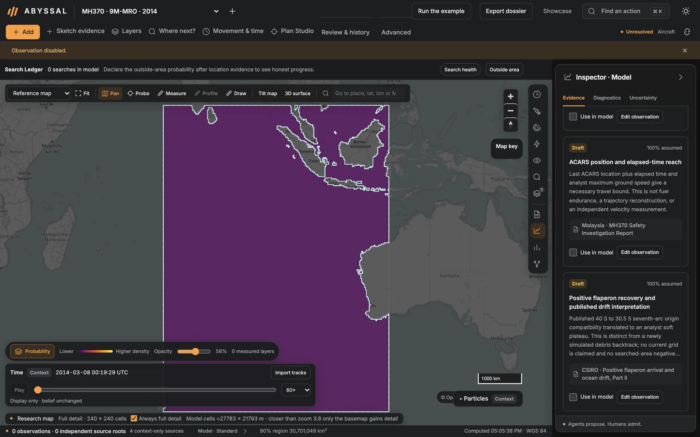
Step 1 — Admitting ACARS reachability (`1 observation`): Checking `Use in model` on the 17:07 UTC ACARS position and maximum elapsed-time travel bound (`Malaysia · MH370 Safety Investigation Report`) establishes a necessary physical reach envelope without assuming fuel endurance or autopilot mode. The 90% region remains `30,701,049 km²` because a 7-hour maximum-speed circle covers the whole Indian Ocean box.
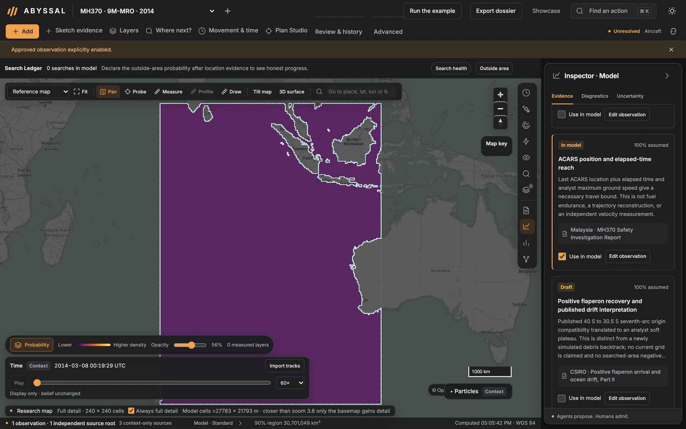
Step 2 — Admitting the Inmarsat 7th arc (`2 observations`): Checking `Terminal BTO and published southern-flight condition` (`Inmarsat · The Search for MH370`) collapses the `30.7 million km²` uniform domain by a factor of forty onto the glowing 7th arc: the 90% region drops straight to 756,423 km².
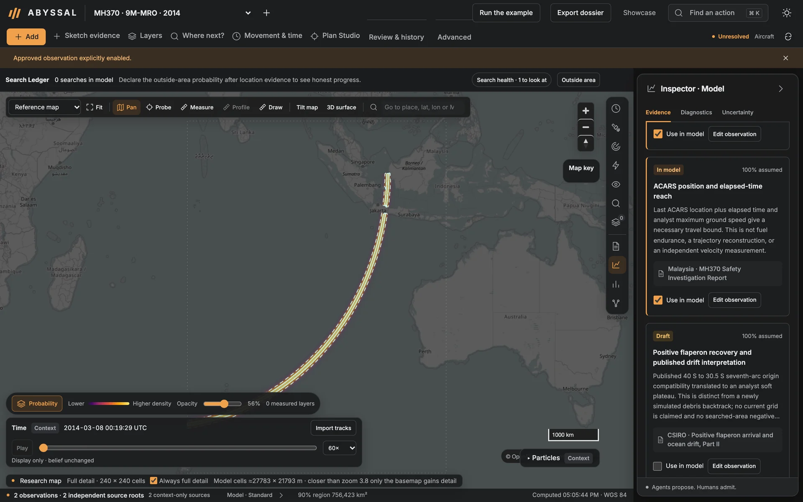
Step 3 — Admitting CSIRO flaperon arrival & drift (`3 observations`): Checking `Positive flaperon recovery and published drift interpretation` (`CSIRO`) trims the northern and southernmost extremes of the arc, shrinking the 90% region down to 596,936 km² (`10.29 bits`). Equally, clicking `Remove` inside the Evidence Map reverses any step live (`596,936 → 756,423 km²` or `10.29 → 15.02 bits` when Terminal BTO is removed) with one-click `Undo`.
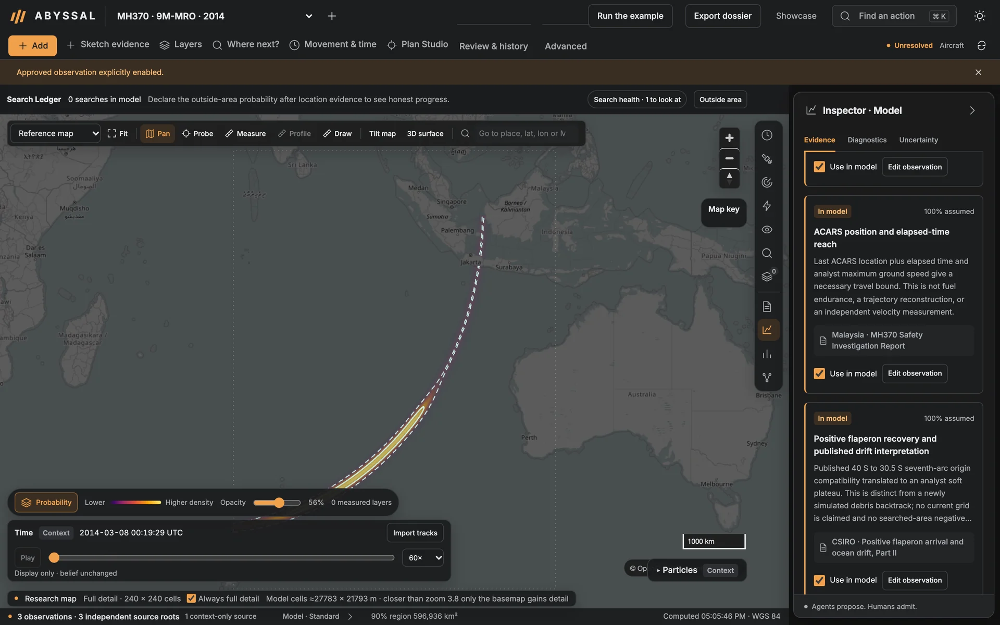

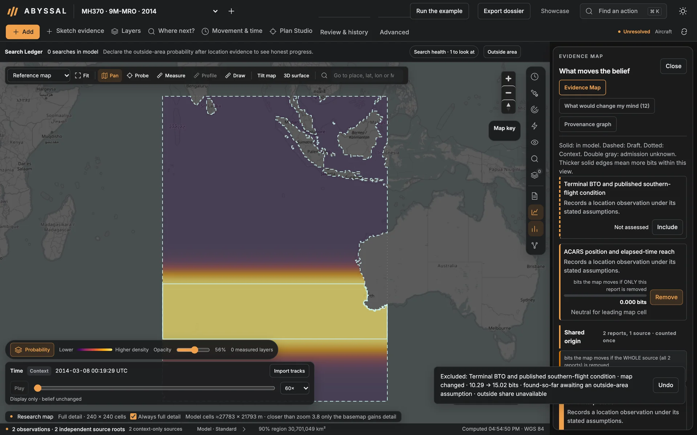
02Provenance Fusion Graph, Model Diagnostics, and 3D Surfaces
To ensure five citing papers never count as five independent measurements, ABYSSAL's Fusion Graph wires every retained source root (ETOPO seabed bathymetry, CSIRO drift analysis, Malaysia Annex 13 Safety Report, Inmarsat Journal of Navigation) into explicit claims and observations, while Inspector · Model exposes the exact `v2 · normalized contamination` rule (\(L = (1 - r) + r\,K / \mathbb{E}_{\text{prior}}[K]\)), posterior entropy (`7.881 bits`), information gained (`5.309 bits`), and read-only uncertainty controls.

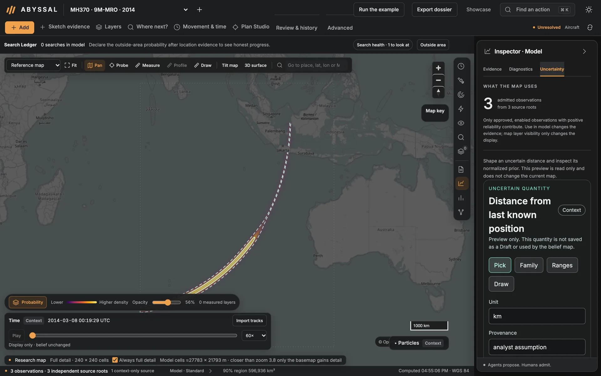
Collapsing all sidebars gives the entire screen to the `240 × 240` full-detail map (`mh370-ember-01-full-map`), a Tilted 3D perspective looking down the glowing 7th arc (`mh370-ember-02-tilted-arc`), and the 3D Data Explorer — rendering both the 3D Probability Surface (`peak 0.000362% per km²`) and the 3D Acquired Seabed Grid (`maximum 7,174 m · 50× vertical exaggeration`) across Broken Ridge and the Diamantina Trench.
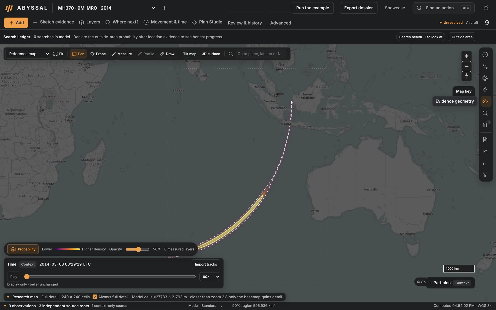
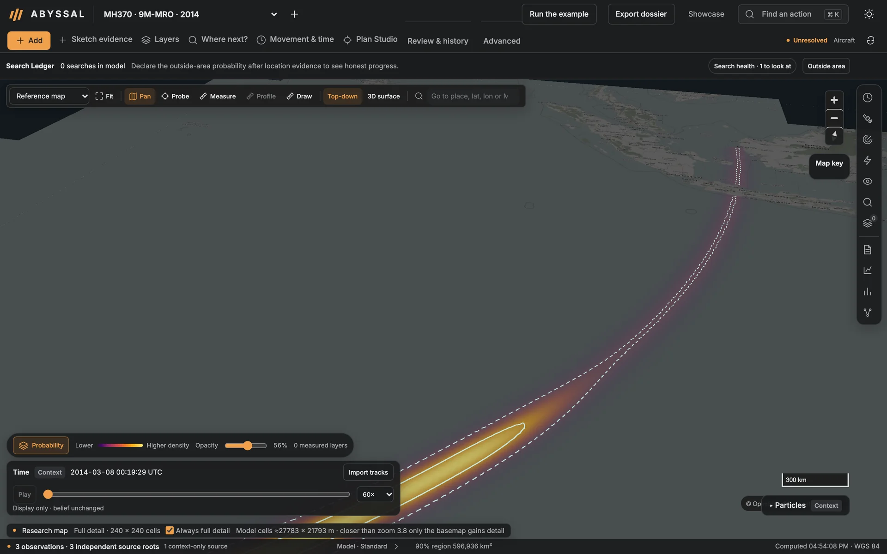
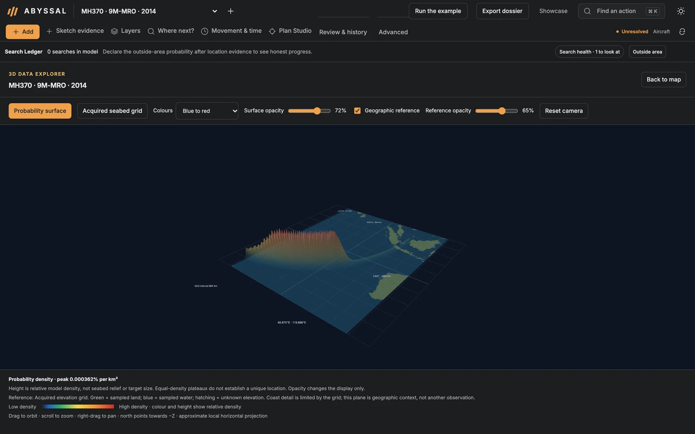
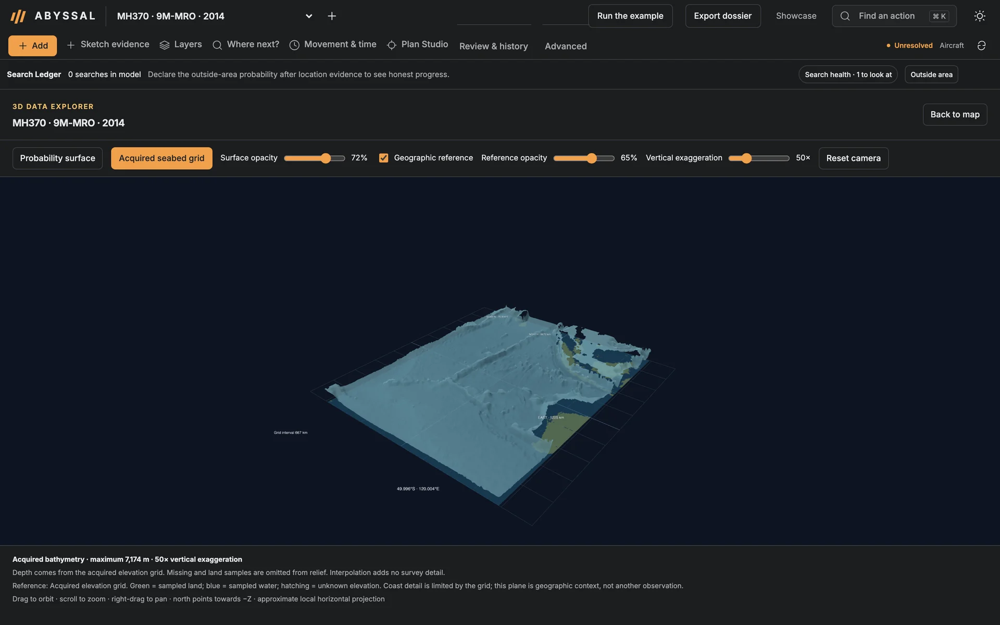
03Satellite physics, ERA5 winds, 4,400 autopilot paths, and the BTO-only test
Each Inmarsat Classic Aero handshake yields two independent observables: Burst Timing Offset (BTO) (total round-trip range) and Burst Frequency Offset (BFO) (carrier Doppler shift driven by relative velocity, Inmarsat-3F1's \(\approx 1.6^\circ\) orbital inclination, and SDU uplink pre-compensation):
Before scoring a single MH370 path, ABYSSAL's forward model was validated against published calibrations from Ashton et al. (2015) and Davey et al. (2016): reproducing the 88 Hz ground calibration (Table 5) to 0.3 Hz, the 17:07 UTC state (Tables 7–8) to ~1 Hz, and all 12 validation rows (Table 9) within 1.5 Hz — catching an inverted downlink Doppler sign on the first draft. Hourly ERA5 upper-air winds and temperatures (175–350 hPa, \(0.5^\circ\) grid) from ARCO-ERA5 were checked directly against the aircraft's own pre-disappearance ACARS reports:
| ACARS time (UTC, FL350) | Measured wind | ERA5 wind | Temp diff |
|---|---|---|---|
| 17:01:43 | 069.6° / 17.4 kt | 069° / 19.4 kt | −1.1 °C |
| 17:06:43 | 070.0° / 17.1 kt | 067° / 17.3 kt | −1.1 °C |
Across 4,400 wind-aware autopilot configurations in three families — Family A (constant Mach, 1,100 configs), Family B (falling Mach long-range cruise, 2,200 configs), and Family C (Mach 0.55–0.86 with inflated 15 Hz BFO noise, 1,100 configs), marginalising over 0 or 12 NM lateral offset past MEKAR — geodesic (LNAV) and constant-true-track solutions fit all 13 measurements cleanly (\(\chi^2 \approx 6\)) and cross the 00:19:29 UTC 7th arc between 37.2°S and 39.8°S (median 38.15°S–38.50°S).

Even more decisively, discarding every BFO measurement completely and running a 5,040-cell timing-only scan (Mach 0.45–0.86, 1° grid) still places 90% of the timing-only mass between 39.7°S and 37.4°S (median 38.4°S, every steady cell north of 36°S below \(10^{-9}\)) — and those timing-only tracks hit the unseen BFOs at 3.7–5.9 Hz RMS. Both satellite channels agree independently.
04Surface drift, Ops Console live layers, and 36 years of NOAA drifters
Inside ABYSSAL, Movement & time projects exploratory surface-drift evolution (`+48.0 h`, `+0.06 bits`, widening the 90% region from `596,936 km²` to `623,773 km²`), while the Ops Console overlays live 10 m wind streamlines, surface ocean currents, terrain relief, live earthquakes, and satellite orbits directly over the Indian Ocean 7th arc.
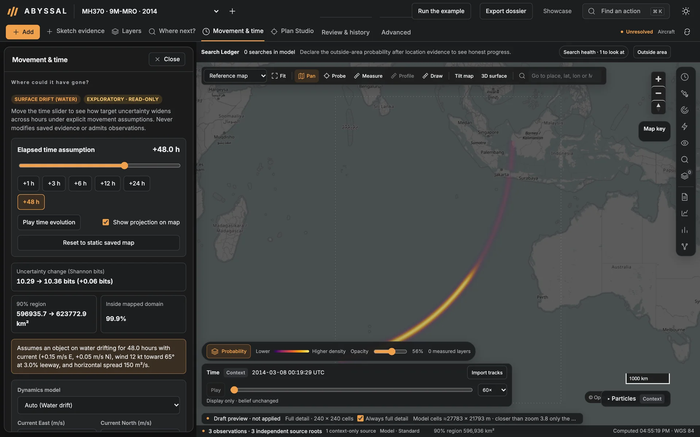
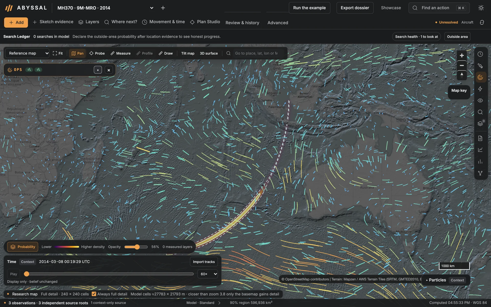
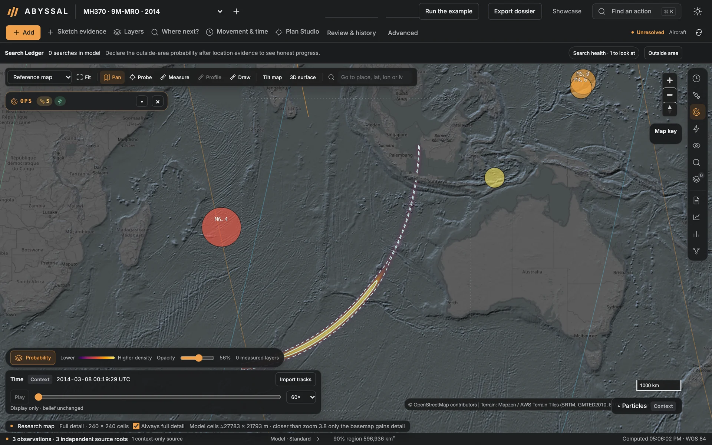
To turn the 27 recovered 9M-MRO debris items into an honest likelihood surface, ABYSSAL ingested 36 years of NOAA Global Drifter Program 6-hourly tracks (1990–2025: 6.0 million fixes, 4,700 drifters, 3.5 million undrogued fixes). Our first attempt — a \(1^\circ\), 4-day Markov transition matrix — was rejected as over-diffused: it predicted ~5–7% Réunion arrival probability within 508 days from 39°S, whereas 0 out of 72 real undrogued drifters near 39°S ever reached Réunion in 508 days. Replacing it with direct censored drifter analogs produced a sharp gradient (`0/60–80` at 37°S–40°S; `0–1/40–60` at 32°S–36°S; `3–5/27–46` at 25°S–31°S), balanced against zero debris found on Western Australia and CSIRO's near-100% 2014 aerial search POD across 26°S–33°S.
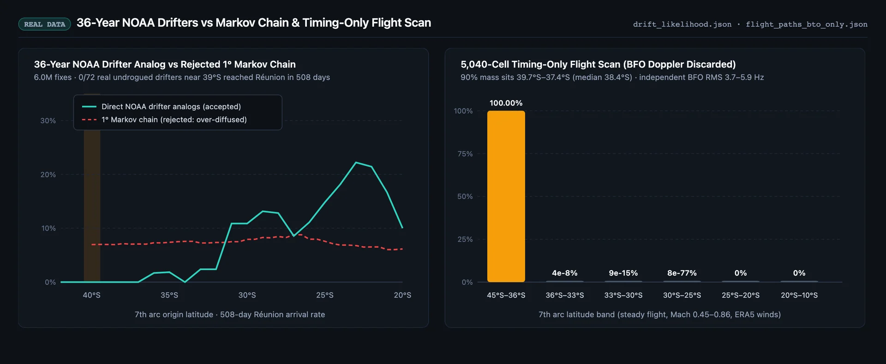
05Seabed sonar: ETOPO bathymetry, mosaic coverage, and 2,024-tile re-scan
Inside Data explorer → Measurements, ABYSSAL loads the retained `Indian Ocean regional seabed · ETOPO` grid (`44,807` valid depth cells, median `4,078 m`) directly under the 7th arc. To eliminate prose errors in searched-area polygons, ABYSSAL fetched Geoscience Australia's public Phase 2 mosaic at zoom 11 (`60.5 m` pixels) and counted imaged pixels cell by cell (`120,522 km²` total): north of ~35.5°S, the ATSB ±25 NM strip was only `42–69%` imaged (explaining Ocean Infinity's 2018 starting corridor), while inside the ATSB core (`36.0°S–39.45°S`, `59,607 km²`), 99.67% is imaged — leaving only `197.8 km²` of holes (`0.013%` steady prior mass hidden for a 250 m debris field).
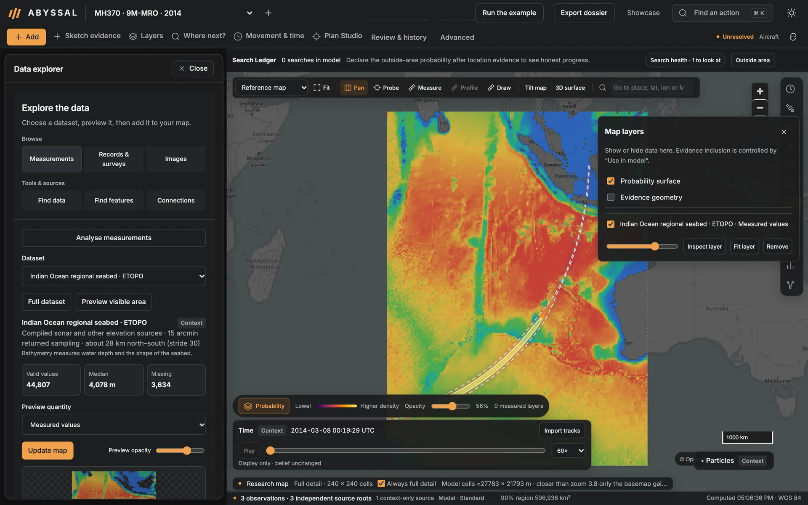
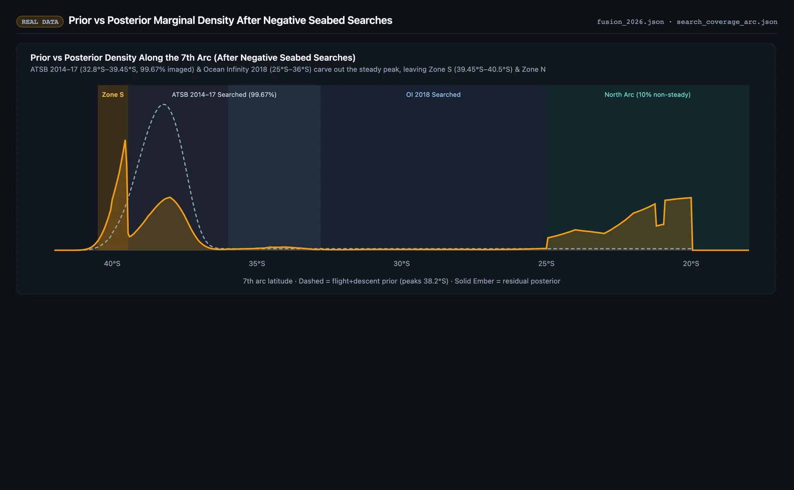
We then pulled 2,024 zoom-15 tiles (~3.8 m pixels, ~1,900 km² across `37.65°S–38.8°S` within ±7.5 NM — ~25% of the steady prior) through ABYSSAL's local-residual anomaly detector. As a positive control, it flagged 16 of the 43 published ATSB contacts (median 88th percentile). Inspecting the top 40 of 225 candidate clusters showed scarps, ridge crests, volcanic outcrops, swath seams, and boulders — no angular aircraft debris fan. If MH370 sits inside the searched core, sonar imaged it and missed it in terrain shadow — not in coverage gaps.
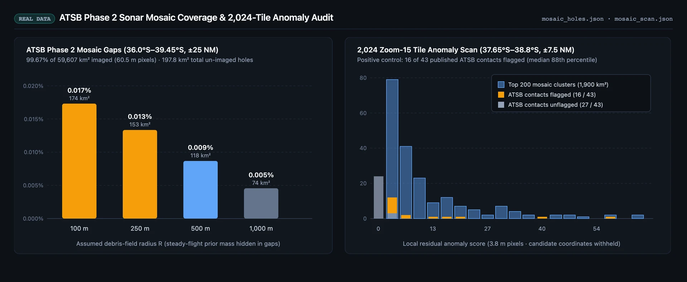
06Hydrophones, 22 seismometers, MODIS, Jason-2, and WSPR null tests
Every public acoustic, seismic, radio, optical, and altimeter lead was rebuilt from primary archives and calibrated on real physical controls — documenting every inconclusive or null result transparently:

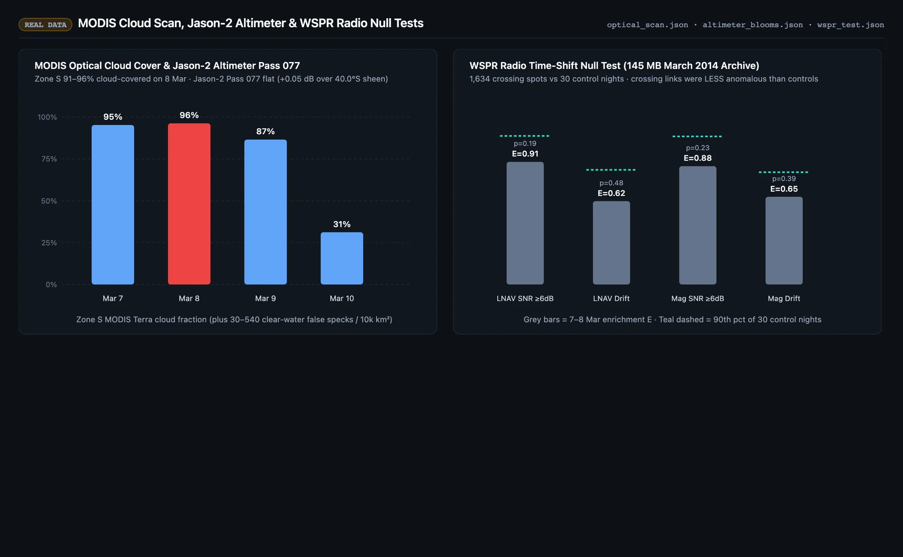
- Uncatalogued local earthquakes caught by raw waveform inspection: Before capping single-station spikes in the 22-station seismic stack, three MH370 windows hit \(p = 0.03\text{–}0.07\). Opening the raw seismograms traced all three to two uncatalogued local earthquakes (Christmas Island at `01:16:11 UTC` with a P-wave followed 35 s later by S-waves ~290 km away, and Réunion at `01:26 UTC`).
- Maldives sighting, overflight seismometers, Gaofen-1, DART buoys & 2014 SAR/AIS: Kudahuvadhoo sits ~2,000 km inside the 00:19:29 UTC 7th arc (BTO residual \(-13,200\;\mu\text{s}\)); MY.KUM and MY.IPM sample at 20 sps (10 Hz Nyquist, below jet noise); Gaofen-1 sits 732 km off-arc (0.85 m/s mean drift for 10 days); DART buoys filter out ~0.5 mm 10–30 s impact waves beneath metre-scale swell; and no public SAR (Sentinel-1A launched 3 April 2014) or public 2014 satellite AIS archive exists.
07Arriving at the final fused map, 28-run ledger, and Plan Studio
Combining every calibrated likelihood in double-precision log space across the `481 × 121` arc-corridor grid (`42°S–18°S`, `±150 NM`) produces the final residual map and KL information ledger: seabed non-detections dominate by more than an order of magnitude (1.37 bits in dive mode, removing 80.1% of prior mass), followed by debris drift (`0.11 bits`), 2014 surface search (`0.06 bits`), Western Australia absence (`0.03 bits`), IMOS hydrophones (`0.01 bits`), and island seismometers (`0.00 bits`).
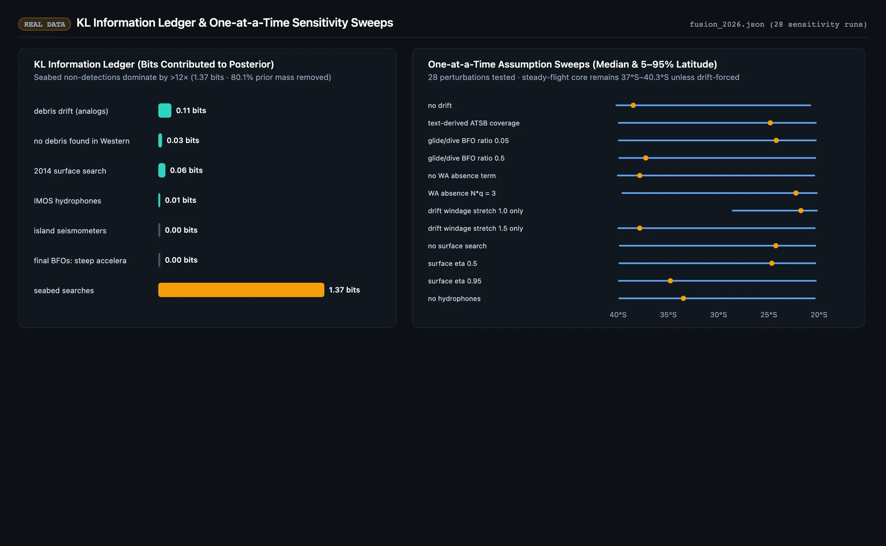
Inside Plan Studio and Where next?, ABYSSAL translates the residual posterior directly into multi-asset sweep boxes and incremental cell rankings along the 7th-arc ridge:
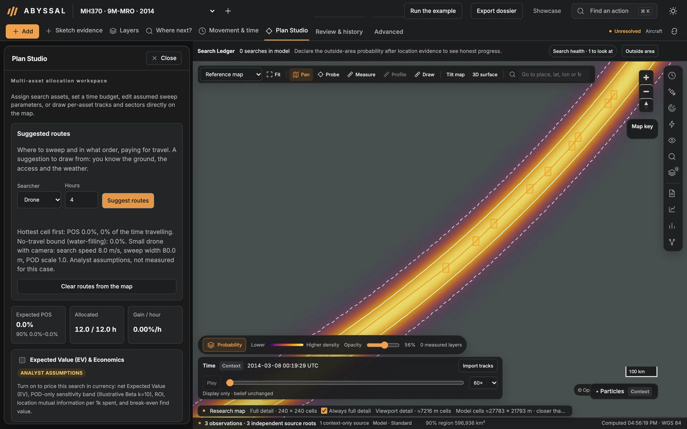
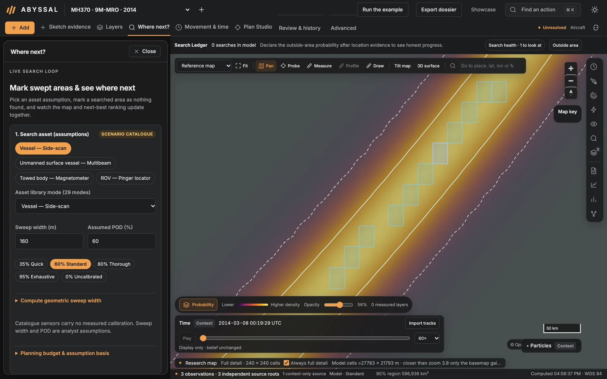
| Candidate zone | Area (km²) | Steady flight | Steady + fuel trim (×0.2 S) | Full mixture (+10% non-steady) |
|---|---|---|---|---|
| 1. South extension (39.45°S–40.5°S, ±25 NM, unsearched) | 23,395 | 36.0% (1.54) | 10.6% (0.45) | 17.0% (0.73) |
| 2. Core re-look (36.0°S–39.45°S, ±25 NM, imaged) | 63,708 | 34.4% (0.54) | 50.1% (0.79) | 16.0% (0.25) |
| 3. Wide glide belt (60–110 NM outside arc) | 87,103 | 13.9% (0.16) | 19.4% (0.22) | 6.5% (0.07) |
| 4. North arc (18°S–25°S, ±25 NM) | 83,113 | 0.0% (0.00) | 0.0% (0.00) | 46.5% (0.56) |
Values in parentheses are posterior percentage points per 1,000 km² of search area.
Four measurements that would settle it
- A high-fidelity 777-200ER fuel-burn model (Mach 0.84–0.85, 17:07–00:17 UTC): Decides directly between item 1 (the unsearched south extension, `36.0%` steady / `~29%` after Portland & Jason-2 nulls) and item 2 (targeted AUV re-look of shadowed terrain in `37.5°S–38.6°S`, `50.1%` under fuel trim).
- ATSB and Ocean Infinity low-confidence and acoustic-shadow polygons: Pixel counting already eliminated mosaic gaps (`0.013%`). The remaining uncertainty inside searched ground is where rugged seabed degraded towed side-scan POD.
- Measured leeway windage on non-flaperon Boeing 777 debris items: Flap fairings, composite panels, and interior pieces govern how strongly the 27 finds pull north of `32°S`.
- 2014 recordings from CTBTO hydroacoustic stations HA01 (Cape Leeuwin) and HA08 (Diego Garcia): Public FDSN archives currently start around 2020; applying the duty-cycle and calibration method built here to continuous 2014 SOFAR recordings would turn a weak acoustic constraint into a decisive one.